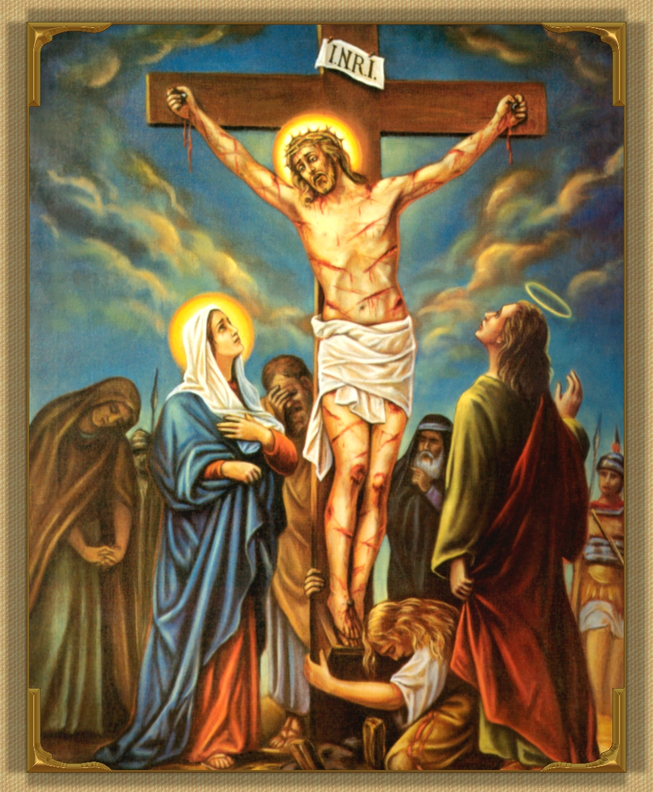

My Jesus, God, what can I say or do?
I offer you my death with all its pains, accepting now the time and kind of death in store for me. Not by a single instant would I lengthen my life's span.
I offer you my death for my own sins and for those of all humanity.
My God! My God! Forsake us not. We know not what we do.